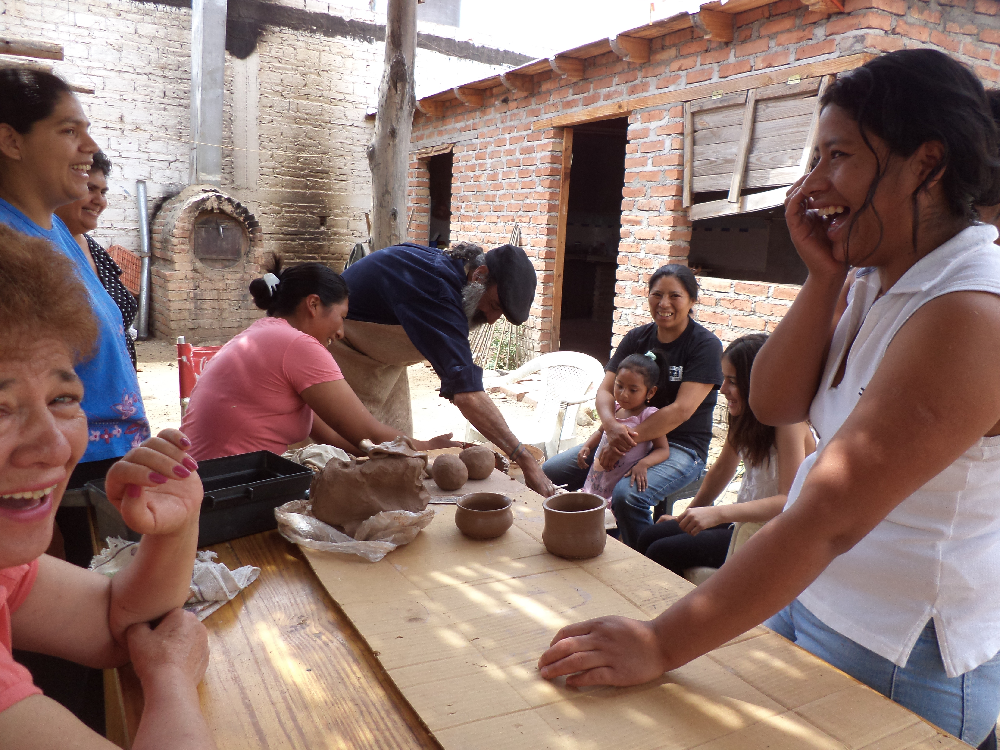
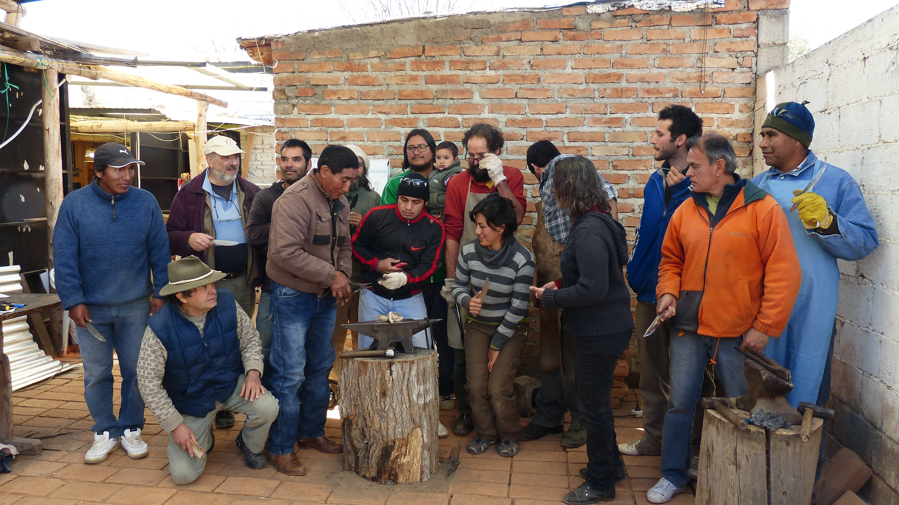
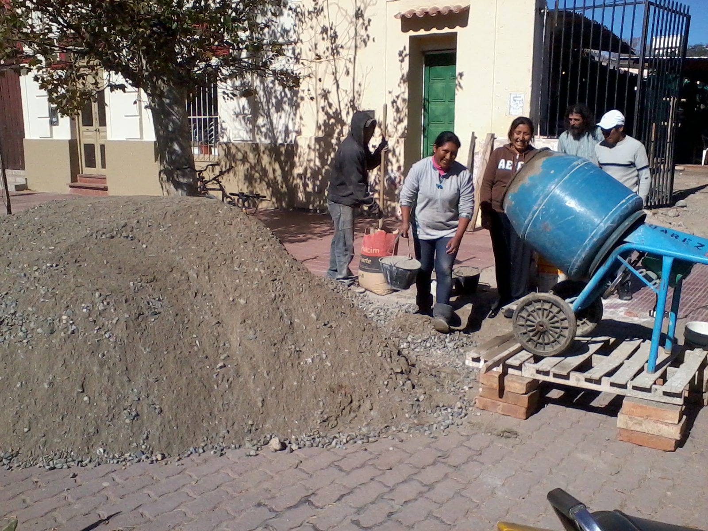
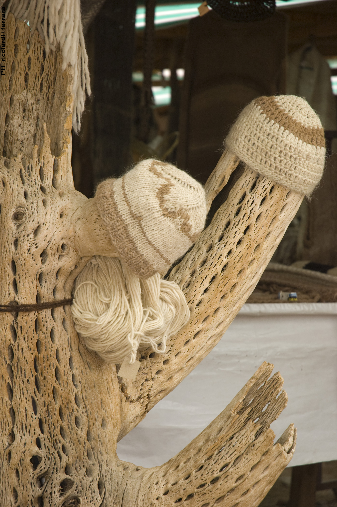
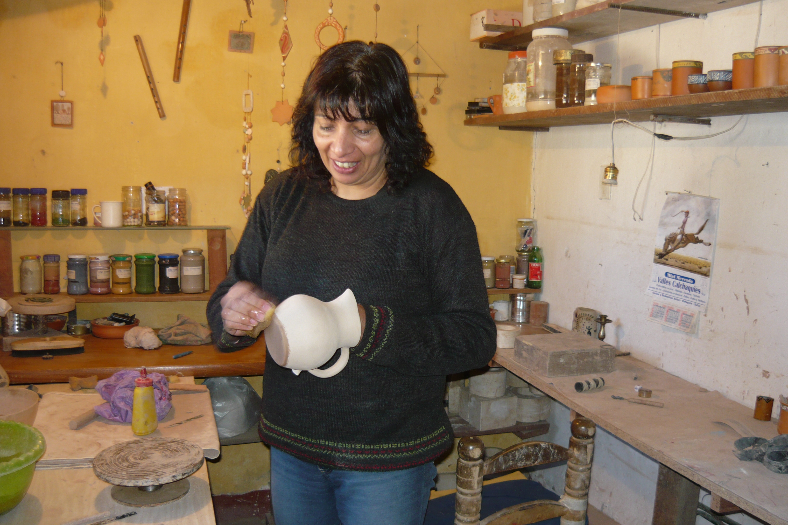
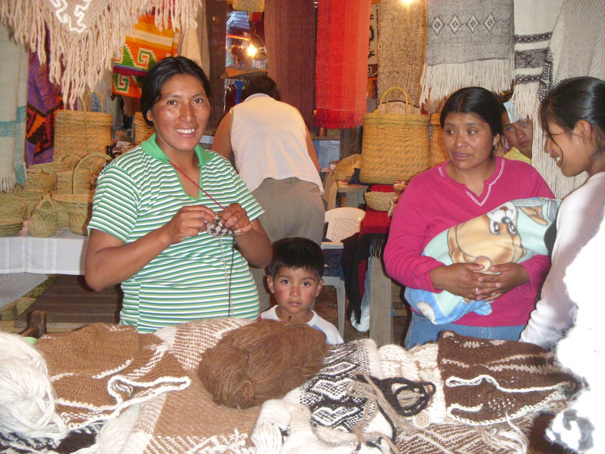
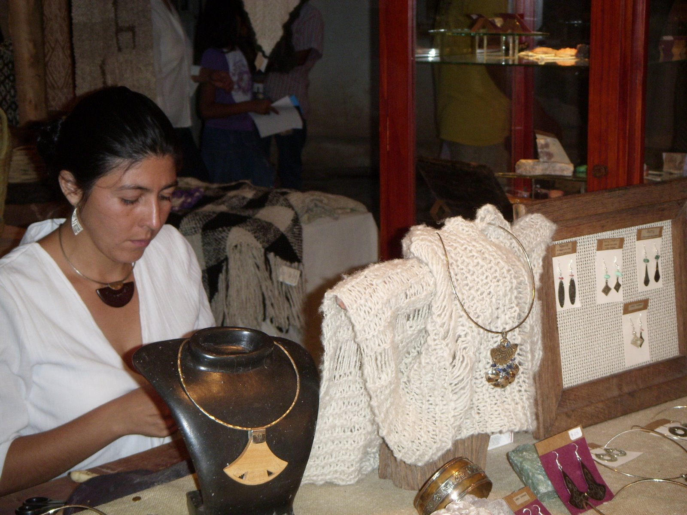

Taller de ceramica
Cafayate, Salta
Cafayate Artesanal
Asociación de Artesanos Independientes
Vicario Toscano 58, A4427 Cafayate, Salta
Ubicación en Google MapsQuiénes Somos
“A todos los artesanos y a todos aquellos que sientan la necesidad de asumir el compromiso de crecimiento individual y colectivo, en defensa de los intereses comunes”
Acta constitutiva, 20 de febrero, 2010
Parados en este presente y acudiendo a la memoria, el trayecto realizado es una muestra de que aceptamos enfrentar los desafíos, profundizar la confianza y asumir nuestra condición de trabajadores de la cultura, buscando el equilibrio entre sus raíces más profundas y la proyección en nuevas expresiones; y por sobre todas las cosas, la artesanía no es solo un bien económico, sino un producto que refleja el pensamiento y el sentir de su creador, quien deja de ser anónimo para transformarse en el autor de un bien cultural.
Nuestra asociación como herramienta de desarrollo social, nos permite ofrecer a la comunidad un lugar para el aprendizaje y asumir el compromiso con las nuevas generaciones, quienes podrán tomar nuestro camino y mejorar la propuesta a partir de nuestra experiencia.



Nuestra Historia
Tierra, postes y trabajo colectivo


Año primero
Julio de 2008 - julio del 2009
- Agosto, 2008: Desfile de prendas artesanales en nuestro predio
- Febrero, 2009: Fiesta de la Vendimia. Finca las Nubes (Cafayate)
- Primer Aniversario: Julio, 2009
Año segundo
Julio de 2009 - julio de 2010
- Septiembre, 2009: Décimo tercer Encuentro Nacional de Artesanos. San Fernando-Buenos Aires.
- Septiembre, 2009: Semana del turismo. Cineteatro Municipal de Cafayate
- Marzo, 2010: Séptima Fiesta de la Vendimia. Finca las Nubes, Cafayate
- Julio, 2010: Herencia Viva. Salón América, Salta. Secretaria de Turismo y Cultura, Salta
- Segundo Aniversario: Julio, 2010
- Festejo en la plaza 20 de Febrero, Cafayate
Año tercero
Julio, 2010 - julio, 2011
- Julio, 2010: Encuentro Regional de Pequeños Emprendedores. Plaza de San Carlos, Salta. Ministerio de Desarrollo Social de la Nación
- Agosto, 2010: Feria del Tejido. San Telmo, Buenos Aires. Ministerio de Desarrollo Social de la Nación.
- Feria del Tejido. Centro Cívico. San Carlos de Bariloche, Rio Negro. Ministerio de Desarrollo Social de la Nación
- Septiembre, 2010: Décimo cuarto encuentro nacional de Artesanos. San Fernando, Buenos Aires. Feria de Artesanos de San Fernando, Municipalidad de San Fernando.
- Semana del turismo, 2010. Cafayate, Salta
- Noviembre, 2010: Feria Internacional de Artesanías. Puesto institucional de la provincia de Salta. Predio Ferial La Rural Buenos Aires “FUNDART”
- Diciembre, 2010: Feria de Navidad “Las Cañitas”, Ciudad Autónoma de Buenos Aires, Ministerio de Desarrollo Social de la Nación.
- Marzo, 2011: Desfile “Emprendedores de Nuestra Tierra”, Hotel Sheraton, Buenos Aires. Ministerio de Desarrollo Social de la Nación
- Octava fiesta de la vendimia, Finca las Nubes, Cafayate, Salta
- Abril, 2011: Telares del norte, Finca las Nubes, Cafayate
- Junio, 2011: Feria de políticas sociales. Instituciones de la economía social. Ministerio de desarrollo social de la Nación. Plaza de Amaicha del Valle Tucumán.
- Continúa…
Nuestro Trabajo
Nuestro Trabajo





